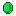
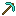
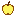

Udeos Launcher
Play Minecraft on Windows, macOS and Linux. No Microsoft account. Pick a name, pick a version, press Play.

Free, no premium tier, no ads
Vanilla, Forge, NeoForge, Fabric and Quilt
Mods, skins and servers in one window